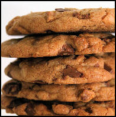

Using Safeway Delivery: A Comprehensive and Honest Review
{Photo by Darwin Bell}
The mega-grocery-giant Safeway has launched a Safeway delivery service that will literally drop your groceries off straight into your kitchen.
Sometimes it's difficult, when juggling a newborn, work, older children, and a hungry husband, to
get to the store. It's just easier for your groceries to come to you.
So is this a mother's dream? or a disastrous disappointment?
I've surveyed moms who use the Safeway delivery service (since it's not in my area) to provide an honest review. Hopefully
this information will help you decide whether a Safeway delivery is in your future.
On the Eastern Coast, you can use Safeway Delivery if you live in the Washington DC / Virginia area. In the West, Safeway will deliver to
homes found in California, Arizona, Oregon, and Washington.
Things You'll Love About Safeway Delivery
There were many things mothers liked about shopping Safeway online. Here's a simple list describing their top benefits.
Product details included photos, sizes, and price per weight to help you comparison shop.
Using the Safeway Club Card (that you use in the store) allows you to grab in-store specials online.
Occasionally you can find web-only specials.
Some items are actually cheaper online than in the Safeway stores.
You can leave notes for your "personal shopper" that you'd like the really ripe avocados or the green bananas.
Previous orders are saved, so return shopping is even easier.
"Express Shopping" lets you type in your list, instead of searching item-by-item.
Delivery charges can be discounted, depending on how long you want to wait for delivery. Four-hour delivery windows are less
than two-hour delivery windows.
Orders over $150 get a 50% discount on delivery charges. Add a 4-hour delivery window, and you get it delivered practically for free.
Delivery drivers will carry the order inside and place it wherever you'd like it. If drivers are going to be late, they call ahead.
Usually that delay is only 10-15 minutes past the delivery window.
Tipping drivers is not allowed.
Safeway is generous with emailing good coupons for discounted or free delivery codes.
In checkout you can specify that if a product is unavailable, which substitutions are acceptable, if any.
On the Other Side of the Coin...
With every ying, there is a yang, right? So although moms liked using Safeway, there were a few disappointments. You'll have
to determine how heavily to weigh them against the pros above.

{Photo by Mrs. Magic}
The prices are not always the cheapest (compared to Aldi), but when they do have sales, they're good.
Manufacturer coupons or foodstamps are not accepted through this service. You have to go into the store to use them.
Safeway is also a sister-site of Genuardi's, so occasionally a "Genuardi's" logo will show up online. This can be
confusing, since Genuardi's only delivers to a small area of the East Coast. Even if the logo appears, if you were on the Safeway website, you're good for
delivery.
It seems the product-freshness was a toss up. Some moms reported excellent produce, others complained it wasn't as fresh as it could be.
The only way to test this one is to try it for yourself.
The Verdict on Using Safeway Delivery
Overall, the experience with Safeway delivery seemed to be a good one. Most mothers reported excellent and pleasing results. The biggest "Pro"
factor was the delivery charge discounts.
The biggest "Con" factor was not being able to use manufacturer coupons.
The "anti-tipping" policy regarding delivery drivers makes the pressure of how much to tip nonexistent. A small benefit, but not unnoticed.
So, in summary, if you live in a Safeway delivery area, it's definitely worth a try. Especially if you can get free delivery on your first order.
Update! It's as if they read my mind! Right now new customers (that would be you) can get free delivery! Limited time only!